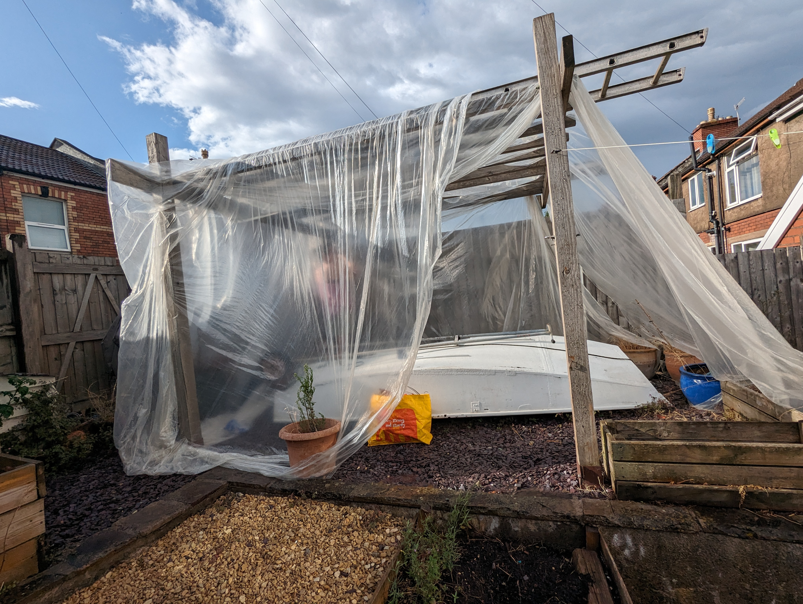
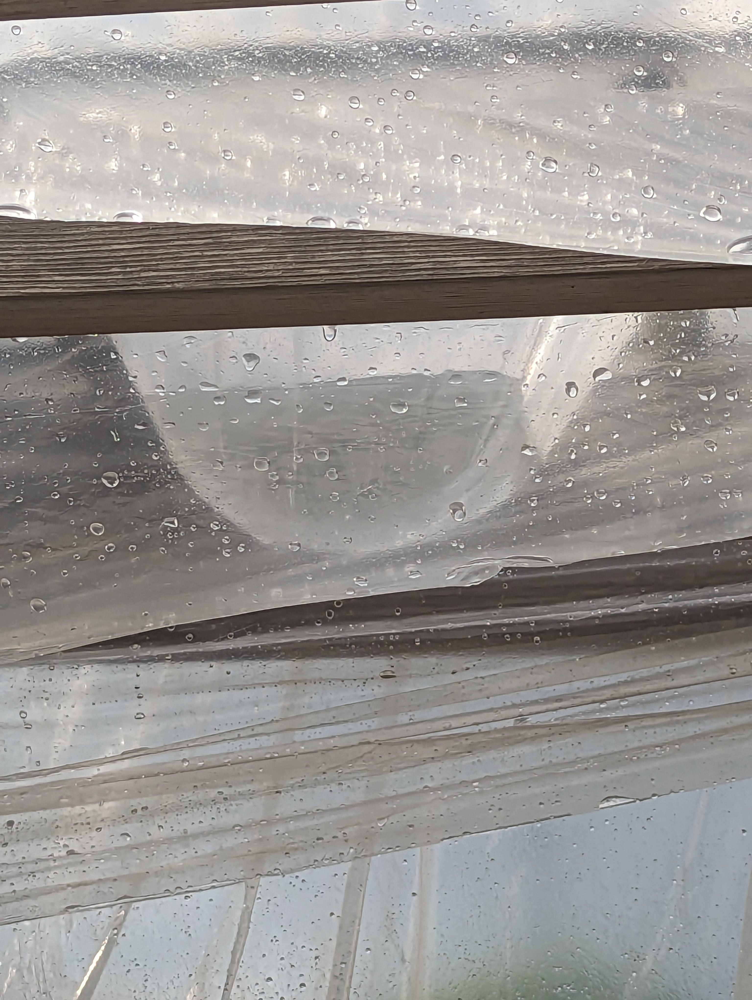
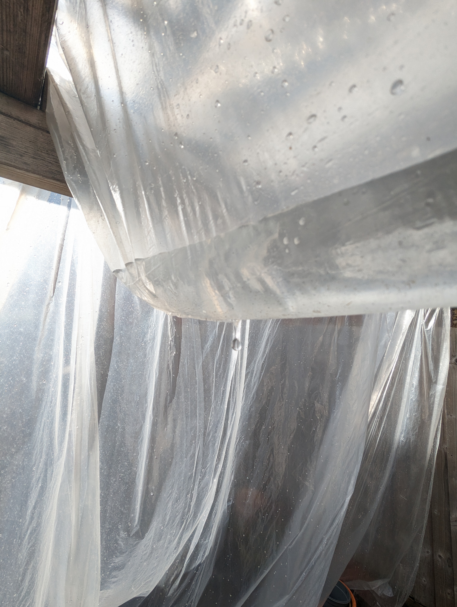
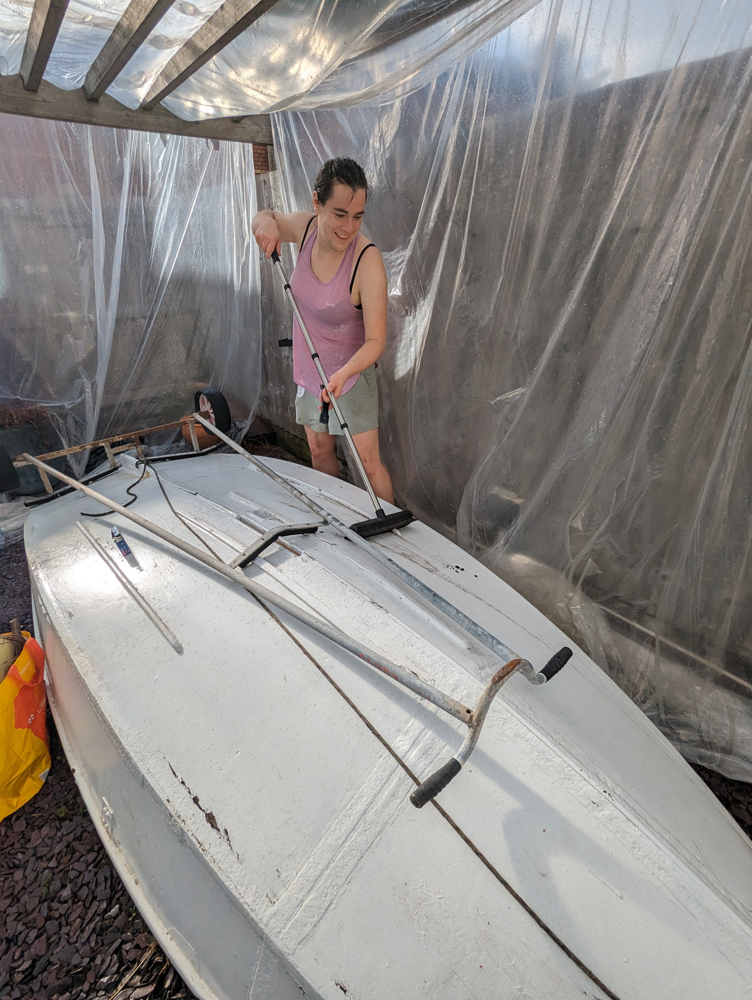

Boat Week: Sunday, Day 0#
Boat week, July 2k23: the week Emily tries to get Cabij ready for the water, commenced today. It was also Captain Emily’s birthday, who celebrated with a birthday pizza, kebab, and cheesy chips, followed by fruity macarons.
Cling film greenhouse, sideways rain and water boobs#
When the skipper arrived at the dry dock it was about 4pm and very hot and sunny - and so we made the most of it by sitting inside, hiding from the sun, and chatting.
Due to the unfavourable forecast, Emily came prepared with some (very thin, cling-film-like) PVC sheeting to try to build a shelter around the pergola in the garden. When it became a bit cooler, we went outside to set up the cling film greenhouse to sheild Cabij from the rain. We attached the sheeting to the pergola with staples from the stationary drawer and weighed it down with ladders and bags of soil on top, and flower pots around the outside.
We felt pleased with ourselves until it very shortly began to sideways rain. We shouted to each other while being a metre away over the noisy flapping of the sheet. Between that and the wet air it felt like a sailing simulator: this was all actually a lot of fun. Luckily the rain let up after too long. Not before, however, the PVC sheeting developed “water boobs”: pools of water in between the rungs of the ladder. Some of these began to distort the PVC and we made a couple of tactical holes in the sheeting, but we mostly used a broom to get water off the top of the shelter. Somehow Cabij got through all of this mostly dry.
  {kind=link}
{kind=link}
{kind=link}
Paint-scraping Cabij’s bum#
Once the rain let up, Emily stayed out for a while scraping paint from Cabij’s hull in preparation for priming, hopefully tomorrow…